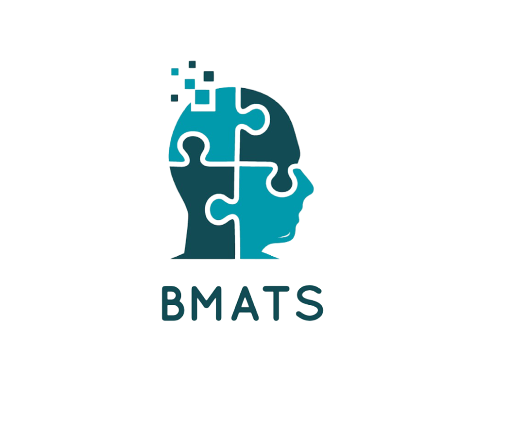

Identity leaks in
A name, an email domain, a phone area code — each is a signal a reader cannot fully unsee. The fix is structural: remove them from the text before scoring happens, not ask the reader to ignore them.

BMATSResume screening rewards keyword stuffing and carries every bias the reader brought with them. BMATS strips the identity out of a resume before anything scores it, then matches candidates to roles on meaning rather than string overlap.
Two failures compound in ordinary applicant tracking: identity leaks into the judgement, and keyword matching mistakes vocabulary for ability. BMATS attacks both, in that order.
A name, an email domain, a phone area code — each is a signal a reader cannot fully unsee. The fix is structural: remove them from the text before scoring happens, not ask the reader to ignore them.
Exact-match filters reward whoever mirrored the job posting's wording. A candidate who wrote "built distributed services" loses to one who pasted "microservices" — same skill, different vocabulary.
Anonymizing after scoring is theatre. In BMATS the redacted text is what gets stored and what the model sees — the original never reaches the matcher at all.
spaCy's en_core_web_sm NER finds PERSON entities; two regexes catch
emails and phone numbers. Redactions are applied back-to-front so earlier character offsets
stay valid. Toggle it below — this runs the same rules the service does.
Marcus Adeyemi Okonkwo
m.okonkwo@gmail.com · +1 (403) 555-0182 · Calgary, AB
EXPERIENCE
Backend Developer Intern, Nordwave Systems
• Engineered a Python service that processed 40k events/day
• Built REST endpoints with FastAPI and PostgreSQL
• Reduced p95 latency by 38% through query optimisation
Research Assistant — supervised by Dr. Helen Vasquez
• Implemented transformer fine-tuning experiments in PyTorch
• Automated the data pipeline with Airflow and Docker
EDUCATION
University of Calgary — BSc Computer Science
SKILLS
python · fastapi · postgresql · docker · pytorch · airflow · gitSkills, metrics, employers and institutions stay. The goal is not a blank page — it is a document that still describes capability while saying nothing about who wrote it.
The redaction loop applies ranges in reverse order, which is exact for disjoint spans but can misalign when an entity overlaps a regex match — a name inside an email address, for instance. The code says so in its own comments rather than pretending otherwise.
One POST carries a PDF through five stages before a number exists.
pdfplumber pulls raw text out of the uploaded PDF.
NER plus regex redaction. Only the redacted text is persisted.
utils/anonymizer.pySkills matched against a 110-term lexicon; experience found by action verbs; education by institution keywords.
utils/semantics.pyA cross-encoder reads the job text and candidate text together and returns one similarity score.
stsb-roberta-baseApplication row written with its score via SQLModel on SQLite.
core/database.pyBi-encoders embed each document separately and compare vectors — fast, but the two texts never meet. A cross-encoder feeds the pair through the model together, so the job's wording conditions how the resume is read. Slower per comparison, materially better at judging whether this candidate fits this role.
Raw stsb-roberta-base output clusters low — roughly 0.5–0.6 for a strong
match. The service multiplies by 1.6 to spread scores across the display
bands. It is a presentation fix, not a trained calibration, and the code is explicit
about that.
BMATS runs locally against a Python backend, so there is no hosted demo. This is a reconstruction of the React client — pick a page from the sidebar.
Seeded from the database and the internships API
Collaborate with software designers and testers to refine requirements, develop and test product features in an agile environment.
Design and implement RESTful APIs on high-traffic distributed systems handling millions of requests per second.
Research and implement deep learning models across NLP, computer vision and reinforcement learning.
Built entirely from the anonymized resume — no name is stored
Track your job applications and scores
Applicants ranked against a role you posted
| Candidate | Score | Band |
|---|---|---|
| candidate_01 | 81% | High |
| candidate_07 | 74% | High |
| candidate_04 | 49% | Medium |
Colours, spacing and radii are taken from the project's own design tokens
in frontend/src/index.css. Cards without data are inert here.
FastAPI with automatic OpenAPI docs at /docs.
| Method | Path | Does |
|---|---|---|
| POST | /auth/sign-up | Register an account |
| POST | /auth/sign-in | Authenticate |
| POST | /users/upload-resume | Parse, anonymize, extract, store |
| GET | /users/{user_id} | Profile with skills and experience |
| GET | /users/{user_id}/jobs | Roles posted by this user |
| POST | /users/{user_id}/jobs | Post a role |
| GET | /jobs/ | List every open role |
| POST | /jobs/ | Create a role |
| GET | /jobs/{job_id} | One role |
| POST | /applications/ | Apply — scores on write |
| GET | /applications/user/{userId} | My applications |
| GET | /applications/job/{jobId} | Ranked applicants for a role |
| GET | / | Service banner |
Applying to a role you posted yourself returns 400 — checked before any scoring work happens.
An external internships API feeds a four-stage ETL — extract, transform, load, orchestrated by job_data/pipeline.py — normalising locations and salary bands into the internal job model.
The backend seeds its own sample jobs and a test user on startup, so there is something to score immediately.
pip install -r requirements.txt
python -m spacy download en_core_web_sm
uvicorn main:app --reload
→ 127.0.0.1:8000/docs